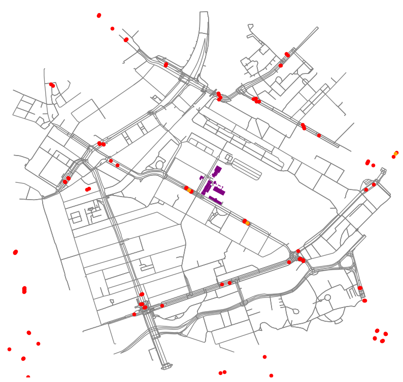

import osmnx as oximport pickleimport matplotlib.pyplot as pltimport networkx as nximport gpxpyimport gpxpy.gpximport codecsimport requestsimport geopandas as gpdimport geopy.distance as geoimport jsonimport plotly as pyfrom shapely.geometry import Point, Polygonimport plotly.express as px
cityswim = ox.graph.graph_from_point(center, dist =1300, network_type='all', dist_type='network')north =float(avg_lat)+.1south =float(avg_lat)-.1west =float(avg_lon)-.1east =float(avg_lon)+.1edges_map = Polygon([(west, north), (east, north), (east, south), (west, south), (west, north)])#water =ox.geometries.geometries_from_bbox(north, south, east, west, tags={'natural' : 'water'})#water = water.clip(edges_map)fig, ax = plt.subplots(figsize=(10,10))ax.set_aspect('equal')ax.set_facecolor('white')ox.plot_graph(cityswim, edge_color='grey', node_size=0, show=False, close=False, ax=ax,)gdf.plot(ax=ax, markersize =20, color ="red") #closest bus stopsstops.plot(ax=ax, markersize =20, color ="orange")gdf1.plot(ax=ax, color ="purple") #We determine a 50m radius for the close buildings in order to ssign the HQ of the race.#gdf2.plot(ax=ax, color = "dark green")#water.plot(ax=ax, color="lightblue")plt.savefig("publictransport.png")

We used the available data to find the capacity of public transport. We have 5 tram stops wihtin 1 km. The tram passes about 5-10 times and hour so averaging 7.5 times an hour. A tram has 60 seats and a 125 standing spaces [@(GVB, 2023; Wikipedia-bijdragers, 2022)]. The capacity of public transport is calculated below.
#Our endpoint and startpoint were assigned earlier as finish_swim and start_swim#the center coordinates are calculated above as avg_lon, avg_lattime_seconds =10*60speed =4*1000/3600wdistance = time_seconds * speedprint(wdistance)#we calculate centrality for the street network around the swimming route and include the nodes at 666m distance. #we use network_type is all to include the bridges around Marine terraincentral_finish = ox.graph.graph_from_point(finish_swim, dist = wdistance, network_type='all')central_start = ox.graph.graph_from_point(start_swim, dist = wdistance, network_type='all')#find nearest nodes to the coordinates of the finish and headquarterclosest_finish = ox.distance.nearest_nodes(central_finish, df.longnum[16], df.latnum[16], return_dist=True)print(closest_finish)closest_start = ox.distance.nearest_nodes(central_start, df.longnum[0], df.latnum[0], return_dist=True)print(closest_start)centrality_finish = nx.closeness_centrality(central_finish, 46366390)centrality_start = nx.closeness_centrality(central_start, 46365861)print("The centrality of the finish is", centrality_finish, ", and the centrality of the start is", centrality_start)
666.6666666666667
(46366390, 6823208.798913781)
(46365861, 6823644.953020242)
The centrality of the finish is 0.0 , and the centrality of the start is 0.0390860200493787
The low numbers mean that the ‘finish_swim’ and ‘start_swim’ are easily accesible as a lower centrality number means the nodes are better connected.